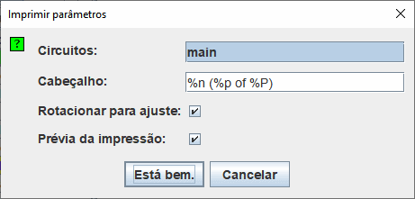

Configurar impressão
Quando você escolher | Imprimir ... |, Logisim exibirá uma caixa de diálogo para configurar o que será impresso.

Configurar impressão
- Circuitos: Exibirá uma lista onde você poderá selecionar um ou mais circuitos para serem impressos. (Circuitos em branco não serão exibidos como opções). O Logisim irá imprimir um circuito por página. Se o circuito for muito grande para a página, a imagem será redimensionada convenientemente.
-
Cabeçalho: TMostrará o texto que deverá aparecer centrado na parte superior de cada página. As seguintes substituições serão feitas no texto.
%n Nome do circuito na página %p Número de página %P Total de páginas %% Total de páginas - Girar para ajustar: Se estiver assinalada, irá o Logisim rotacionar cada circuito em 90 graus, quando o circuito for muito grande para caber a página, e não precisar ser escalado para menor, se puder ser girado em 90 graus.
-
Prévia da impressão: Muda o estilo da imagem produzida com a informação de estado ou apenas o esquema.

Esta opção também está disponível em preferências de aplicação no separador layout. Isto irá alterar a exibição na área de trabalho.
Após clicar em Está bem. , Lo Logisim irá mostrar a configuração da página padrão em uma caixa de diálogo antes de imprimir os circuitos.